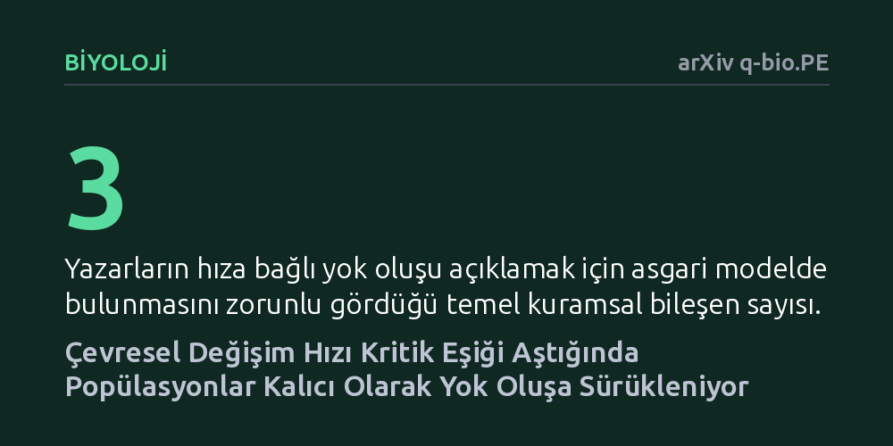

BIYOLOJI · arXiv q-bio.PE · 2026-10-10
Araştırmacılar, çevresel koşulların aşırı hızlı değişmesi durumunda av-avcı popülasyonlarının geri dönüşsüz biçimde nasıl çöktüğünü açıklayan asgari bir matematiksel model geliştirdi. Av dinamiklerine güçlü Allee etkisini ekleyen çalışma, popülasyonların çevreye uyum sağlaması ile yok oluşa sürüklenmesini ayıran kritik değişim hızını analitik olarak formüle etti.
Ekosistemlerin çökmesi için çevre koşullarının mutlaka kritik bir mutlak eşiği aşması gerekmediğini, koşullar güvenli sınırlarda kalsa dahi değişimin hızının tek başına kalıcı yok oluşa yol açabileceğini gösterir.

Doğadaki canlı türlerinin yok oluşunu düşündüğümüzde genellikle akla tolere edilemeyecek düzeyde bozulan çevre koşulları gelir; örneğin sıcaklığın rekor seviyelere çıkması ya da yaşam alanlarının kritik bir sınırın altına inmesi gibi. Ekolojide, parametrelerin kritik bir yapısal eşiği aşmasıyla tetiklenen bu tür ani çöküşlere çatallanma kaynaklı devrilme denir. Ancak doğada çok daha sinsi ve gözden kaçan bir tehdit daha vardır: Ortam koşulları canlıların yaşayabileceği sınırlar içinde kalsa bile, değişimin hızı ekosistemin uyum kapasitesini aştığında popülasyonlar aniden çökebilir.
Matematiksel ekolojide hıza bağlı devrilme olarak adlandırılan bu olgu, günümüzdeki hızlı küresel çevre değişimleri açısından büyük önem taşır. Çevre yavaş değiştiğinde canlılar yeni koşullara ayak uydurabilir; ancak değişim çok hızlı gerçekleştiğinde sistem yeni dengeyi takip edemez ve yok oluşa sürüklenebilir. Araştırmacılar, bu çalışmada türlerin çevreye uyum sağlaması ile yok oluşa sürüklenmesi arasındaki sınırı belirleyen dinamikleri netleştirmeyi amaçlamıştır.
Hıza bağlı devrilmeyi inceleyen önceki bazı popüler av-avcı modelleri, biyolojik gerçeklikle bağdaşmayan ciddi bir matematiksel kusur barındırıyordu. Bu modellerde, çevresel baskı nedeniyle popülasyon işlevsel olarak sıfıra inse bile, koşullar durulduğunda türlerin kendiliğinden toparlanarak eski dengesine döndüğü görülüyordu. Gerçek dünyada ise bir popülasyon belirli bir eşiğin altına düştüğünde eş bulma ve savunma zorlukları nedeniyle tamamen tükenir; yani yok oluş geri dönüşü olmayan kesin bir sondur.
Araştırmacılar bu yapay toparlanma sorununu çözmek için klasik Lotka-Volterra av-avcı modelindeki av denklemine güçlü Allee etkisini ekledi. Bu etki sayesinde sistem çift-kararlı hale geldi ve yok oluş durumu popülasyonu kalıcı olarak içine çeken gerçek bir çekiciye dönüştü. Araştırma herhangi bir canlı deneyi veya arazi gözlemi içermeyip tamamen teorik matematiksel analize dayanmaktadır. Yazarlar, çevre taşıma kapasitesinin zamana bağlı değişimini geometrik tekil pertürbasyon teorisi kullanarak inceledi.
Modelin geometrik analizi sonucunda, sistemde katlanmış bir eyer tekilliği barındıran kritik bir manifold yapısı tespit edildi. Bu yapının üzerinde bulunan özel bir yörünge, olası tüm senaryoları ikiye bölen kesin bir sınır çizgisi gibi davranmaktadır. Yörüngenin bir tarafında kalan popülasyonlar değişen çevre koşullarını takip ederek yeni dengede yaşamını sürdürürken, diğer tarafa düşen popülasyonlar kaçınılmaz olarak sıfıra inip yok olmaktadır.
Geliştirilen modelin analitik olarak yalın olması, araştırmacıların bu iki kaderi ayıran kritik değişim hızını kapalı matematiksel formüllerle doğrudan hesaplamasını sağladı. Böylece simülasyon tahminlerine bağımlı kalmadan, çevresel değişimin hangi hız değerini aştığında popülasyonun uyum sağlayamayarak kalıcı çöküşe gideceği kesin kurallarla ortaya kondu.
Yazarlar, bu yapının hıza bağlı yok oluşu açıklayan asgari model olduğunu savunmaktadır. Model; yok oluşun kalıcı olmasını sağlayan çift-kararlılık, katlanmış kritik geometri ve çözümleri ayıran özel eyer tipi yörünge olmak üzere üç temel unsuru en sade biçimde bir araya getirmektedir. Matematiksel olarak fazlalıklardan arındırılmış bu yapı, doğadaki hızlı çöküşlerin mekanizmasını temel düzeyde anlamak için berrak bir kuramsal çerçeve sunmaktadır.
Bununla birlikte, ortaya konan modelin henüz gerçek saha verileriyle veya kontrollü laboratuvar deneyleriyle test edilmemiş saf bir matematiksel yaklaşım olduğunu unutmamak gerekir. Doğadaki karmaşık besin ağları, rastlantısal hava olayları ve tür içi çeşitlilik bu denklemde yer almamaktadır. Buna karşın çalışma, koruma biyolojisinde yalnızca çevrenin ne kadar bozulduğuna değil, bu bozulmanın ne kadar hızlı gerçekleştiğine de odaklanılması gerektiğini net biçimde hatırlatmaktadır.